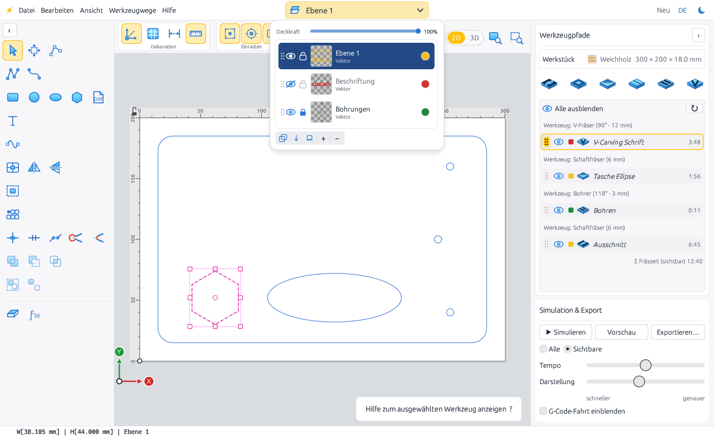

Ebenen
Ebenen gruppieren Formen: Sie lassen sich ein- und ausblenden, sperren und färben.
Oben in der Mitte zeigt der Ebenenwähler, auf welcher Ebene Sie gerade zeichnen. Ein Klick öffnet die Liste aller Ebenen.


| Element | Bedeutung |
|---|---|
| Auge | Sichtbar / ausgeblendet. Ausgeblendete Formen werden nicht gezeigt, nicht gefräst und nicht exportiert. |
| Schloss | Gesperrt / entsperrt. Gesperrte Formen bleiben sichtbar, lassen sich aber nicht anklicken oder ändern. |
| Name | Ein Klick macht die Ebene aktiv – neue Formen entstehen auf ihr. Doppelklick benennt sie um. |
| Farbpunkt | Die Farbe der Ebene; ein Klick wechselt sie. |
Unten in der Liste
- + legt eine neue Ebene an (Neue Ebene anlegen), − löscht die aktive Ebene (Ebene löschen).
- Auswahl hierher verschiebt die gewählten Formen auf die aktive Ebene.
Eine Zeichnung hat immer mindestens eine Ebene; die letzte lässt sich nicht löschen.